Select a scene and a method. Drag the slider to compare the input (with mask overlay) on the left against the selected method's output on the right.
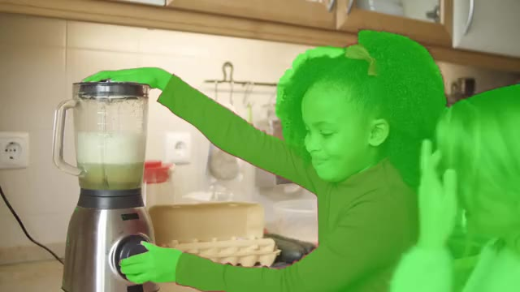
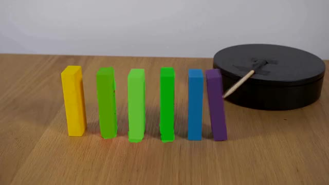
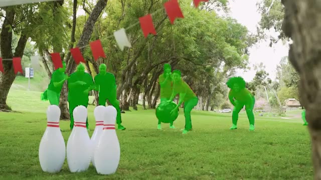
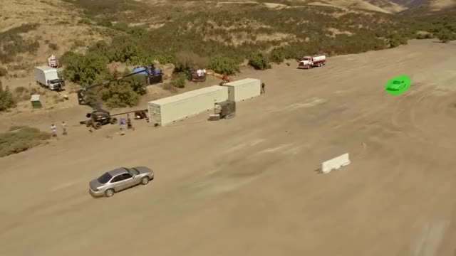
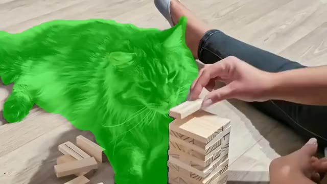
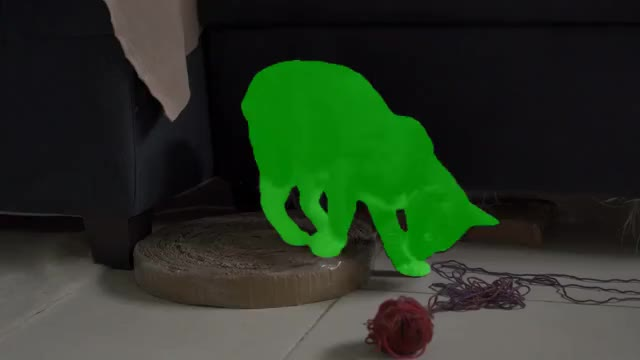
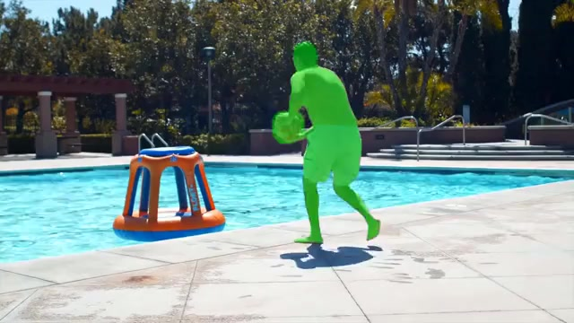
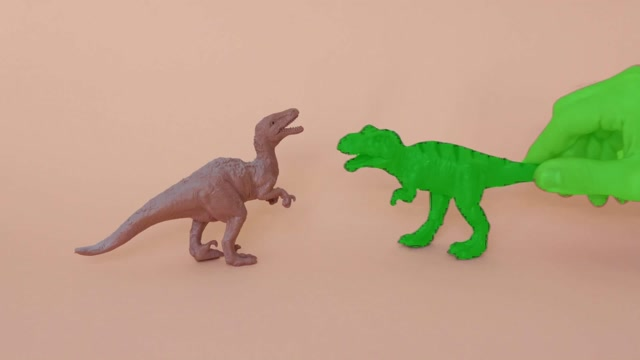
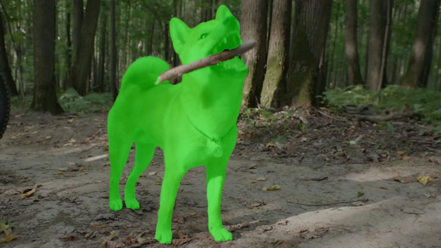
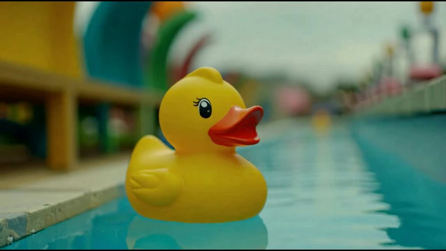
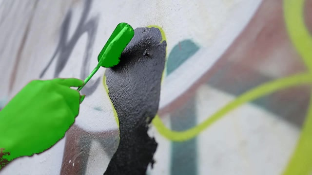
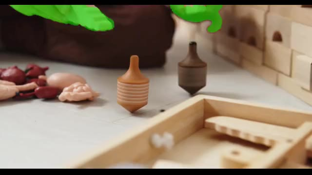
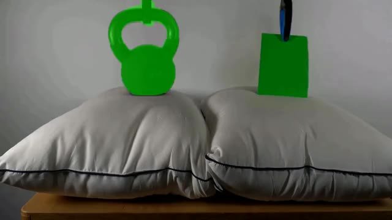
A user clicks on an object to remove it. A VLM-based reasoning pipeline then identifies which other regions of the scene will be causally affected — objects that will fall, collide, or change trajectory — and encodes this into a quadmask that guides the diffusion model. VOID's first pass generates a physically plausible counterfactual video with the object and its interactions removed. If the model detects object morphing — a known failure mode of smaller video diffusion models — an optional second pass re-runs inference using flow-warped noise derived from the first pass, stabilizing object shape along the newly synthesized trajectories.
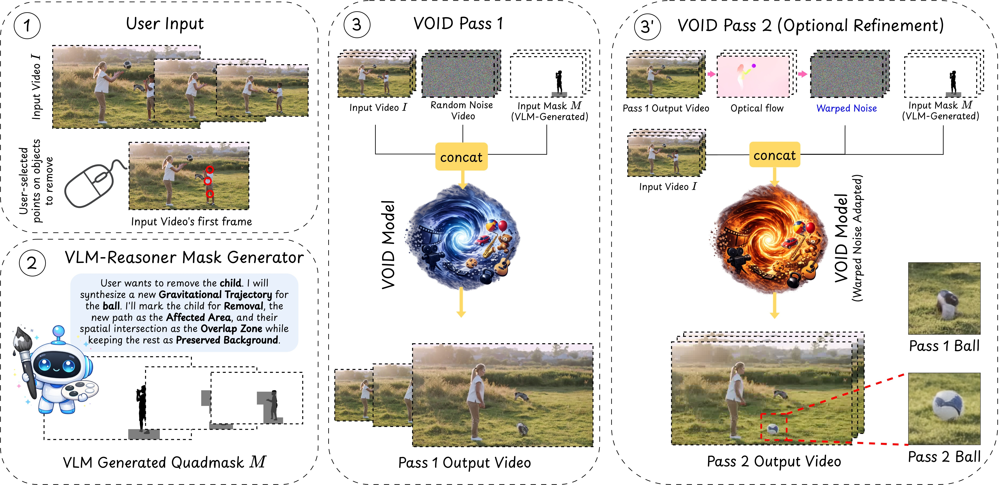
When the first pass produces object morphing artifacts, a second pass re-runs inference using flow-warped noise to stabilize shape along synthesized trajectories. Drag the slider to compare Pass 1 (left) vs Pass 2 (right).
We generate paired counterfactual removal examples from Kubric (synthetic) and HUMOTO (human motion). Each triplet shows the input video, the quadmask, and the ground-truth counterfactual output.
Input Video
Quadmask
Counterfactual Video
(Ground Truth)
An AI-generated audio overview of the paper.
@article{motamed2026void,
title = {VOID: Video Object and Interaction Deletion},
author = {Motamed, Saman and Harvey, William and Klein, Benjamin and
Van Gool, Luc and Yuan, Zhuoning and Cheng, Ta-Ying},
year = {2026}
}